MP3 Encoding and Psychoacoustics
Overview
MP3 is the most widely used lossy digital audio encoding format. The standard was published in 1993 and quickly adopted by the world. The MP3 compression algorithm can reduce audio file size by up to a magnitude, which allowed people to quickly transmit and efficiently store music on their portal audio players in addition to enabling the sharing and consumption of music on the internet.
Theory
The algorithm to encode and decode MP3 files is extremely complex and requires a firm understanding of mathematics. However, the basic principle is easy to understand.
Psychoacoustics
Psychoacoustics is fundamental to the MP3 encoding algorithm. The study of psychoacoustics reveals that the human mind and ear have inherent limitations. By understanding these limitations, we can eliminate or distort sound in a subtle and in some cases, unnoticeable manner in order to reduce file size. The primary psychoacoustics principles the MP3 encoding algorithm employ are the human frequency perception range and masking effects of sound due to human biology.
Humans can only hear frequencies between 20Hz and 20kHz, anything outside of that range can be thrown away. Auditory masking occurs when humans have trouble distinguishing sound when the two frequencies are too similar. Temporal masking occurs when humans have trouble perceiving distinct sounds when they occur quickly one after another (5ms). The biology of the human ear prevents a quiet sound from being heard quickly after a loud sand and the way the human mind perceives sound prevents quiet sound from being heard if a loud sound quickly follows.
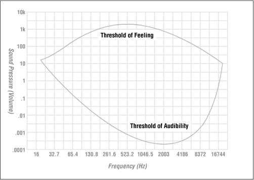
source
Bitrate
The bitrate is the number of bits per second sound is stored at. By reducing the bitrate, we can reduce the amount of space required to store the file. One way to reduce the bitrate is to apply the principles of psychoacoustics to remove the non-audible or barely audible parts of a recording.
There are two types of bitrate when it comes to encoding MP3, constant bitrate and variable bitrate. Constant bitrate encoding got a head start because it much easier to implement. The algorithm simply had to figure out which sounds to eliminate to ensure that only a predefined number of bits per second to store sound.
However, encoding efficiency could be dramatically improved the algorithm accounted for the complexity of sound at various parts of the file. For example, storing a few seconds of silence should take much few bits than a complicated percussion section. By adjusting the bitrate to accommodate for varying levels of complexity in sound, variable rate encoding can either produce files of equal sound fidelity to constant bit rate encoding at a smaller size or of increased sound fidelity given the same amount of space.
MP3 files are stored as a stream of tiny frames of sound much like movies are merely streams of images. Various tricks can be applied to increase the efficiency of compression. One such optimization is known as the bit reservoir. Data contained in frames do not have to be constrained by the size of an individual frame. Bit reservoir can be considered as variable bit rate encoding on a microscopic scale. Complex frames can store extra sound data that cannot fit in the frame size governed by bitrate, by stealing extra space from the neighbor to its left. This would not be very effective if adjacent frames are both complicated and need a lot of space but can work wonders if a complex frame follows a simple frame.
After we apply the complex psychoacoustics model, the file size can be further reduced using a lossless compression technique called Huffman coding. It can be very effective at compressing complex sound data by using a precompiled lookup table of common data sequences to replace long data sequences with much shorter symbols. The decoding step will then simply do a reverse lookup and replace the symbols with the long data sequences and nothing gets lost in translation. Huffman encoding can improve the compression ratio by an additional 20%.
For those who want to learn the nitty gritty of the MP3 algorithm, see the Encoding section of references at the end of this paper
Analysis
Now the fundamentals of the MP3 algorithms are understood, let us see how well it actually works.
Tools
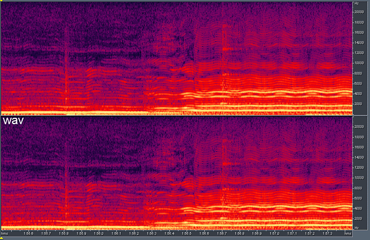
Spectral analysis relies on a three-dimensional graph that plots the amplitude of each frequency over time. It is one of the riches ways to visualize sound. Spectral analysis reveals how much, when and where (on the frequency spectrum) encoding is distorting sound. Spectral analysis will allow us to determine the effects of applying the psycoacoustics model on the lossless sample.
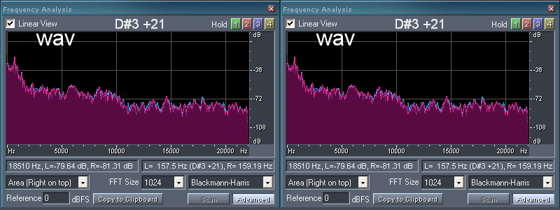
Frequency analysis relies on the spectra of sound, which is a plot of the loudness of sound across the audible frequency range over a short amount of time; in this case two seconds. Frequency analysis provides an insight to the MP3 encoding algorithm by showing how the psychoacoustic model is used to gradualy remove frequency ranges that are close to or beyond the boundaries of human hearing. How well the encoded sample's spectra matches with that of the original is a good indicator of the authenticity of reproduction.
Bitrate Comparison
The following graphs from Adobe Audition show how various encoding settings affect sound quality. The sound sample is taken over a two second period. Hover over any of the MP3 spectral graph or spectra to compare it to the lossless graph. Six different encodings with the LAME MP3 encoder are shown, half variable rate and half constant rate in diminishing quality. The graph for the original lossless WAV is included as a reference point.
- Lossless WAV
- 128-256kbps variable bit rate MP3
- 64-256kbps variable bit rate MP3
- 128-192kbps variable bit rate MP3
- 256kbps constant bit rate MP3
- 192kbps constant bit rate MP3
- 128kbps constant bit rate MP3
Lossless WAV
The lossless WAV perfectly captures sound at the time of the recording as expected; no information is lost. The spectral graph is dense and smooth with data points across all combinations of time and frequency. The spectra shows that the sound data covers the entire audible frequency. There is smooth progression loudness across the frequency spectrum with no significant peaks or valleys.
128-256kbps variable bit rate MP3
The 128-256kbps vbr encoding preserves much of the nuance of sound in the audiable frequency range. The jump in frequency coverage around the middle of the track shows the variable bit rate algorithm in full effect. The first half of the sample is less complex than the second part so the vbr algorithmic decision to encode the second half of the sample at a higher bitrate than the first makes sense. There is a clear frequency cut off at 16kHz and 20kHz. The spectra reflects this with a significant valley at the 16kHz and 20kHz mark, otherwise the sound spectra appears to be mostly preserved.
The reason for the valley and not a hard drop off is that the variable bit rate algorithm increases frequency coverage to 20kHz for the second half of the sample. 20kHz is widely accepted as the boundry of human hearing, while most people cannot hear above 16kHz as they get older. Hovering over the spectral graph reveals that pretty much all the details are preserved under the 16kHz and 20kHz mark. The 128-256kbps encoding should faithfully render the original recording to the majority of the population.
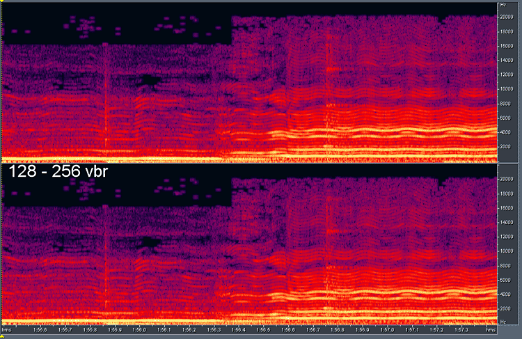
64-256kbps variable bit rate MP3
The 64-256kbps vbr encoding graphs do not look much different from the 128-256kbps vbr encoding. The frequency coverage below the 16kHz and 20kHz mark appears to be just as rich, the only difference seems to be the lack of of spotty frequency coverage above the 16kHz mark in the first part of the sample. The is a result of the lower boundary of 64kbps compared to the lower boundary of 128kbps of the previous encoding.
A likely explanation is that the LAME vbr encoder did not consider the frequency range above 16kHz in the first part of the sample to be worth storing. The only reason it did so was to satisfy the 128kbps minimum bit rate. As expected, the spectra remains essentially unchaged compared to 128-256kpbs vbr encoding. The file size likely came out a bit smaller without the loss of authenticity in sound reproduction compared to 128-256kbps vbr and the lossless source.
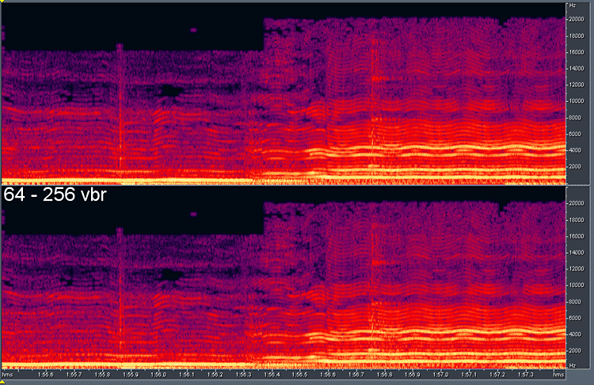 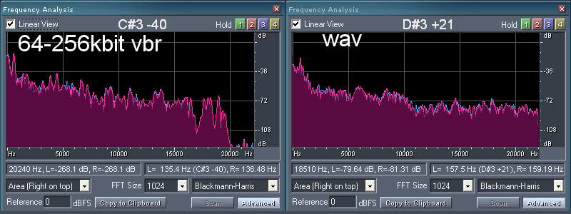
128-192kbps variable bit rate MP3
Lowering the upper boundary from 256kbps to 192kbps does produce a change in the spectral graph. The frequency cutoff in the second part of the now creeps under the 20kHz in to the 16kHz mark. However, this should not impact the audio quality since 16kHz is beyond the hearing range of most anyways. The spotty coverage of frequency above 16kHz in the first part of sample returns, confirming that it is just an artifact of the 128kbps minimum encoding rate.
There is a slight reduction in sound density in the audible range, most noticeably at the one large and two small holes that begin to appear in the first part of the sample. However, this is likely to be the psychoacoustic model being used to reduce close to inaudible data. The largest hole is only about 70ms wide expected to have very little effect on sound quality because of the duration. The removed sound data is also likely to be masked by the high amplitude frequencies just below the 10kHz mark. The spectra remains unchanged from the other vbr encodings.
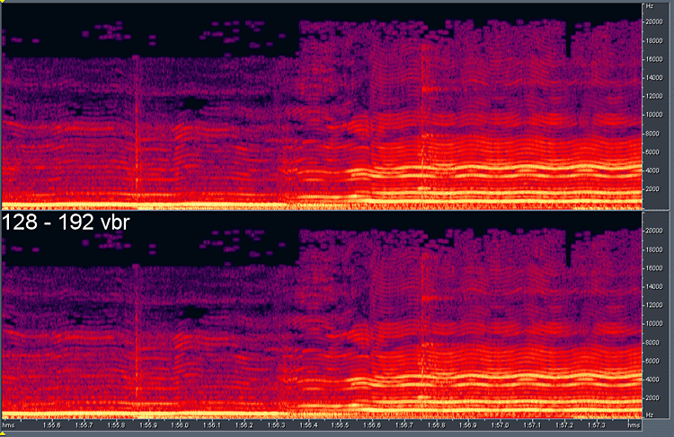

256kbps constant bit rate MP3
There is no surprise that the spectral graph looks almost as complete as that of the original lossless WAV given the positive results from the vbr encodings. The difference in encoding approach between the cbr and vbr is obvious given that the frequency coverage and bitrate stays constant in this case. There was a significant jump in frequency coverage in the vbr spectral graph. Almost all details are faithfully preserved under the 21kHz mark. The fact that the LAME encoder chose to preserve frequencies above the audible limit of 20kHz is indicative that 256kbps is more than enough to capture the full range of sounds from the original lossless source. The spectra closely matches that of the original WAV supporting the fact that sound quality is almost perfectly preserved.
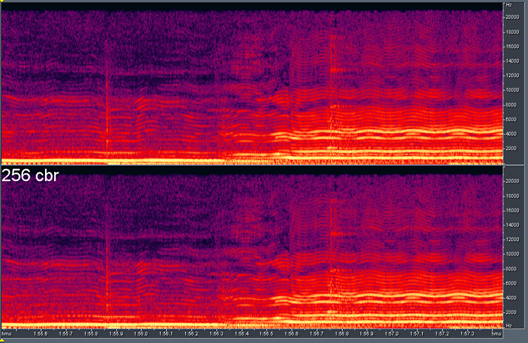 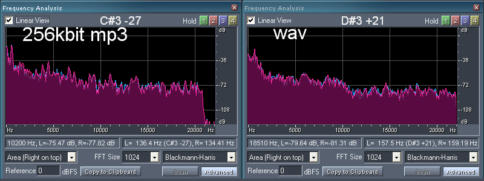
192kbps constant bit rate MP3
The spectral graph for 192kbps cbr looks good as expected. Compared to the 256kbps cbr, the frequency coverage was reduced to about 19kHz across all of the two seconds. This is unlikely to cause a significant degradation in sound quality given that 19kHz is still well above the safe standard of 16kHz for the vast majority of the population. The spectral graph otherwise shows that a 192kbps cbr encoding preserves much of the details in the audible range of the original sample.
The spectra of the encoded sample reveals something interesting. There is a significant valley at the 16kHz mark. This valley was not present in the 256kbps cbr encoding but was present in all the vbr encoded samples. The valley made sense for vbr encoded samples because half of the sample was encoded at a higher bit rate than the other. However, the entire sample is encoded at the same bit rate in this case, which makes the valley very odd. The limitation of constant bit rate would seemingly prevent the optimization of encoding less complex frames at a lower bitrate to free up bits for more complex frames.
The 16kHz valley is not so mysterious when we consider the role of the bit reservoir. The bit reservoir comes in to effect only when the bitrate is reduced from 256kbps to 192kbps cbr because certain complex frames, especially in the second half of the sample, likely came under strain by bitrate reduction. The bit reservoir allows these complex frames to store its extra data in the previous frame at the cost of reducing the bitrate of the previous frame. The valley at 16kHz is attributed to the lower bitrate frames that are storing the data of its more complex neighbors.
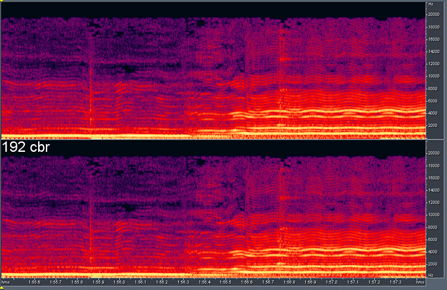 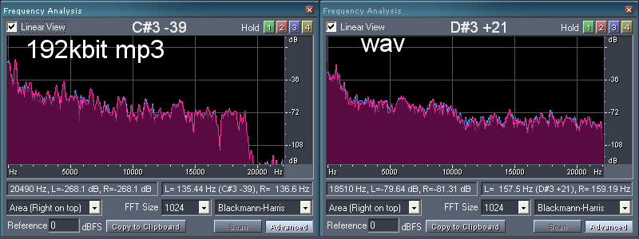
128kbps constant bit rate MP3
Finally the bitrate is low enough to force the LAME encoder to make compromises. The immediate observation is that frequency coverage has been reduced to below 16kHz, the optimistic upper boundary for human perception. This will likely cause a subtle degradation in sound quality. We also see that the frequencies under the coverage range are less rich. Lines are more finely defined and the holes are numerous and more apparent.
The effects of eliminating data according to the psychoacoustic model are more obvious. The dotted streak of holes in the second part of the sample right above the 8kHz mark is likely to be masked by the two much stronger streaks of frequencies (8kHz, 9.5kHz). Although the details of low and midrange (up to 5kHz) seems mostly preserved, the frequency coverage above looks noticeably more sparse and hollow compared to the original sample. This observation is also reflected in the sound spectra. The spectra looks noticeably different compared to the original with deep valleys below the 500Hz, at the 7.5kHz and 1000kHz mark where only a small dent used to exist.
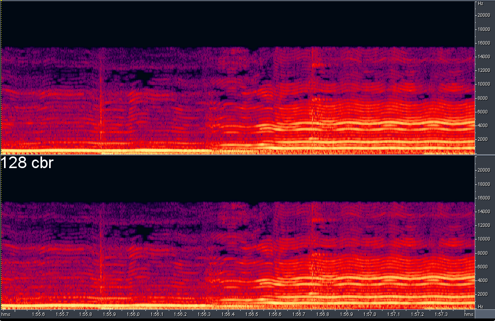 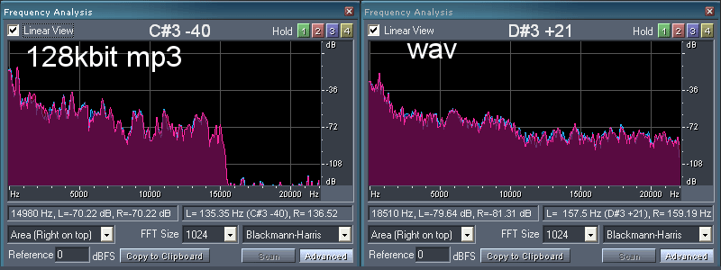
Analysis Conclusion
The spectral and frequency analysis reveals that 192kbps is likely the lowest acceptable bitrate. Encoding at 128kbps is a minimum if authenticity of reproduction is a concern. The efficiency of the LAME encoder is impressive given that it can achieve a 6:1 compression ratio compared to the 1411kbps audio-CD source with almost no sacrifice to sound quality.
However, the efficiency of the encoder is likely to depend on the complexity of the input, and complex sounds may set a higher bar for bitrate. LAME is also known to be the most efficient MP3 encoder; alternative encoders may require much higher bitrates to achieve the same sound quality. The variable bit rate encoding will enable an even higher compression ratio while preserving sound quality. All of this is also under the assumption that typical consumers of MP3 audio have access to audiophile grade equipment when music usually consumed through cheap speakers or iPod head buds. 128kbps may very well suffice for the majority of music listeners.
Real World Studies
Numerous studies have been done to test if people can indeed distiguish a high quality MP3 from the lossless source or a lower quality encoding with varying conclusions. Some well known informal experiments have been conducted by:
Maximum PC
Maximum PC, a PC enthusiast magazine, had four of their employees to pick their favorite audio CD. The employees were challeneged tto distinguish their favorite tracks as well as the favorite track of others among the original lossless WAV, the 160kbps and 320kbps vbr MP3 rip on a pair of headphones. There were no limit to how many times a song can be played. They could scritinize the music for as long as they want. The testers were classified in to four categories: the curmudgeon, hipster, audiophile and pluralist.
The Hipster was in to electronica as well as drum and bass music. She did not hesitate to express how hard it was to distinguish between the various encodings and instead relied on her instincts. She was able to correctly guess the three encodings for her own track but failed at everyone else's track. 3/12.
The pluralist loved all music, and confidently and correctly identified the quality levels of her own track but only guessed the quality of three other track correctly. 6/12
The curmudgeon was more interested in how good the music sounded in the context of compression than the music itself. He was diligent in comparing the various tracks, but did not guess the quality of any of his own tracks right. He did manage to guess the quality level of five other tracks however. 5/12
The audiophile expectedly looked down on the lossy MP3 encoding, yet only managed to correctly identified one of his own tracks and four others. A disappointing 5/12.
Gizmodo
Gizmodo, a tech news blog, took a different route and crowd-sourced the experiment. After waiting a few weeks, a thousand of their readers downloaded the test file and sent back their results. Readers were asked to listen to three songs at various bitrates and identify the point where they could not distinguish the encoding quality.
Unforunately the testing was not double blind because readers were conducting in on their own. However, the results were conclusive, 218kbps was the mean bitrate that readers found to be sufficiently indisdinguishible from the lossless source. From these results, it seems that the bitrate sweetspot is 256kbps.
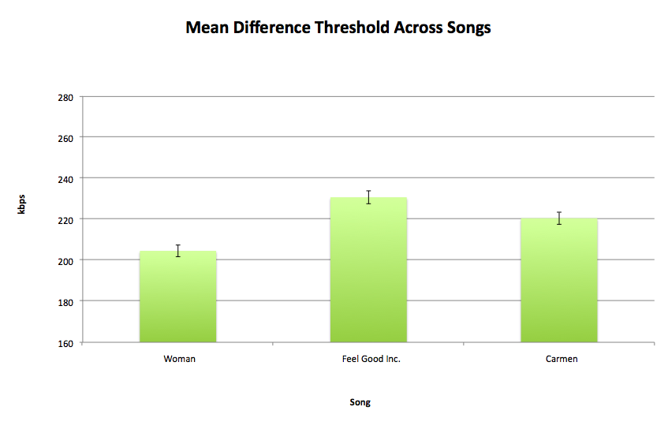
What makes this experiment especially interesting is that the survey also included the cost of the sound system. When the cost was plotted against the mean difference threshhold for quality, a clear correlation emerged. The price of the sound system had an enormous impact on the threshold of quality, starting at 180kbps for a system between $0-$50 to more than 260kbps for a $5000+ system.
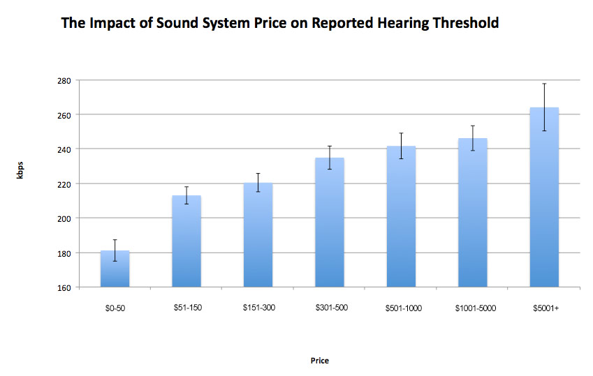
Arstechnica
Will Ryu of Arstechnica conducted one of the earliest MP3 quality experiments. He tested MP3s at 128kpbs, 160kbps, 192kbps and 256kbps and lossless CDs tracks on both his home stereo and Sony MDR-V6 headphones. However, he did know the quality ahead of time which means that his conclusions should be taken with a grain of salt.
Ryu does offer a difference prespection. He claimed he had no touble distinguishing 128kbps MP3 audio from CD tracks. While it did get more difficult at higher bitrates, he believed he could still hear differences at 256kbps if he concentrated hard enough.
Studies Summary
Although these experiments are by no means scientific the conclusions seem to match up with my analytical observations. MP3s encoding is indeed extremely efficient. A song encoded at 256kpbs, 1/6th the size is essentially indistinguish from the original source. Variable bit rate encoding raises the bar and most cannot distinguish a 160kbps vbr song even with delibrate effort. The grade of the audio equipment definitely seems to have an impact on how easily one can spot artifacts from encoding.
The benchmark for MP3 encondings will vary from person to person because everyone's ears have varying capacities and consume music through different equipment. Why not try the experiment yourself at sites like MP3 or Not?
References
General
How MP3 Files Work (Brain)
The History of MP3 (Bellis)
The mp3 History
MP3
The Good Enough Revolution: When Cheap and Simple Is Just Fine
Theory
Overview of MP3 techniques (Bouvigne, 2001)
MP3: The Definitive Guide - Chapter 2 (Hacker, 2000)
Variable Bit Rate: Getting the best Bang for your Byte (Atwood, 2005)
Sample Rate and Bitrate: The Guts of Digital Audio (Connor, 2008)
Psychoacoustics Publications
Encoding
The AudioFile: Understanding MP3 compression (Wilburn, 2008)
Let's build an MP3-decoder (Edstrom, 2008)
Perceptual Coding: How Mp3 Compression Works (Sellars, 2000)
LAME Source Code
LAME Website
GPSYCHO - A LGPL'd Psycho-Acoustic Model
MP3 ISO Coding Standard (1991)
Spectral/Frequency Analysis
About Spectral Frequency Display
Spectral Editing Techniques in Adobe Audition for the Mac (Levin, 2010)
http://blowfish.be/eac/Spectral/spectral.html (2002)
Detecting MP3-Sourced and Mini-Disc Audio (2002)
Studies
Results of 128kbps Extension Public Listening Test (Amorim)
Do Higher MP3 Bit Rates Pay Off? (Decker, 2008)
The Great MP3 Bitrate Test – Results (Wilson, 2009)
mp3 vs cd audio quality tests (Lin, 2005)
Do MP3 encoders sound different? (Ryu, 2000)